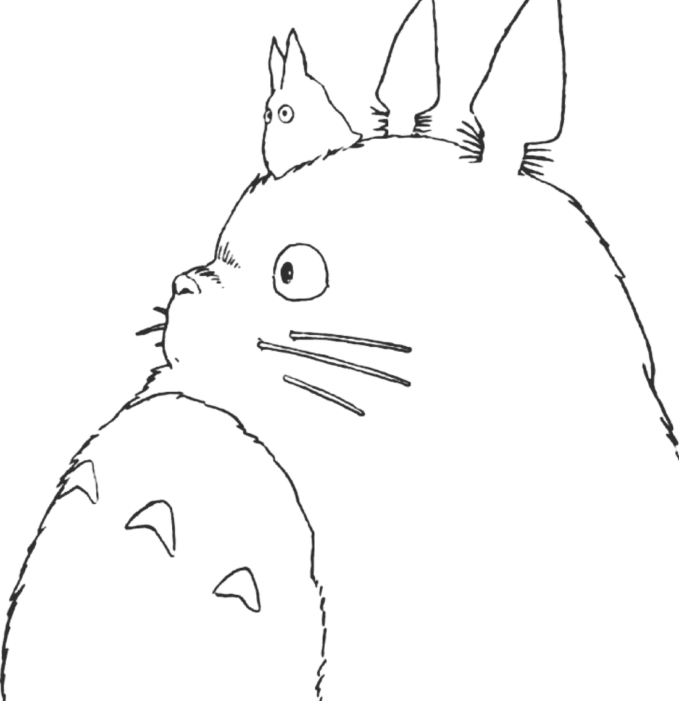

Hayao Miyazaki is treated as a legend of animated film, and his best-known work shows up in the IMDB and Rotten Tomatoes scores. But in the data, do the Studio Ghibli films he both wrote and directed actually rate differently from the rest? Let’s go through it one point at a time.
Scroll to begin
There are 21 Studio Ghibli films in the Feature films list on Wikipedia. Horizontal position is the IMDB rating, vertical position is the Rotten Tomatoes rating. The further up and to the right, the higher both scores.
We mark the films Hayao Miyazaki both wrote and directed — 10 of the 21. The rest were made by other directors such as Isao Takahata, Yoshifumi Kondō and Gorō Miyazaki.
The teal dots bunch tightly in the top right — high on both axes. Read that as ratings that stay consistent, with few weak entries.
As a box plot, Miyazaki’s median IMDB score is 80.5 — above the 76 median for films by others, a gap of 4.5. His box is narrower too: the scores hold steady.
The same pattern shows on Rotten Tomatoes, though the median gap there is smaller.
In the data, films written and directed by Hayao Miyazaki carry a higher median on both IMDB and Rotten Tomatoes than the films made by others — and vary less from one to the next.
Perhaps that consistency is the standard he holds every film to.
The film list comes from Wikipedia — List of Studio Ghibli works, Feature films section (21 films). A film counts as "a Miyazaki film" only when he is credited as both director and screenwriter. IMDB ratings (0–10) are multiplied by 10 here so they sit on the same 0–100 scale as Rotten Tomatoes.
Median IMDB: Miyazaki 80.5 vs others 76 (n = 10 vs 11). Median Rotten Tomatoes: Miyazaki 93.5 vs others 91. Ratings change over time; these are a snapshot from when the data was collected.